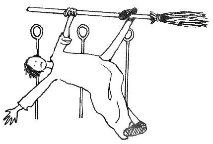
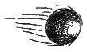

Onuncu Bölüm:
Günümüzde Quidditch
Quidditch oyunu dünyanın dört bir yanındaki hayranlarını heyecanlandırmaya ve esir almaya devam ediyor. Günümüzde bir Quidditch maçına bilet alan herkesi son derece becerikli süpürge kullanıcıları arasında kıyasıya bir rekabet beklemektedir (elbete Snitch ilk beş dakika içinde yakalanmazsa – bu durumlarda hepimiz kendimizi biraz aldatılmış gibi hissediyoruz). Bu becerinin en iyi kanıtı, uzun Quidditch tarihi boyunca kendi sınırlarını ve oyunun sınırlarını gidebileceği kadar ileri götürmeye hevesli cadıların ve büyücülerin icat ettikleri zor hareketlerdir. Söz konusu hareketlerden bazıları aşağıda sıralanmıştır:
Ters Bludger Vuruşu
Vurucu Bludger'a sopanın tersiyle vurarak onu ileri doğru değil, geriye doğru gönderir. İyi nişanlaması zor, ama rakiplerin dikkatini dağıtmak açısından mükemmel bir vuruştur.
Çiftevurucu Savunması
Her iki Vurucu Bludger'a aynı anda vurarak çok daha şiddetli bir Bludger saldırısı gerçekleştirir.
Çift Sekiz Sarmalı
Genellikle penaltı atanlara karşı kullanılan bu Tutucu savunmasında, Tutucu Quaffle'ı durdurmak için üç kale çemberinin çevresinde fırdöner.
Şahinkafası
Hücum Düzeni
Kovalayıcılar bir ok başı şeklinde dizilerek kale direklerine doğru uçarlar. Rakip takımın gözünü bir hayli korkutan ve diğer oyuncuları önünden çekmede etkili bir harekettir.
Parkin Kıskacı
Parkin Kıskacı, adını hareketi icat ettiği düşünülen Wigtown Wanderers kurucu üyelerinden almıştır İkisi her iki yandan, üçüncüsüyse önden olmak üzere üç Kovalayıcı, rakip Kovalayıcı'nın üstüne doğru uçar.
Plumpton Yakalayışı
Arayıcı hareketi: Sakarlık eseriymiş gibi yapılan bu ani dönüşte, oyuncu Snitch'i kolunun yeninden içeri sokar. Adını Tutshill Tornado Arayıcısı Roderick Plumpton'dan almıştır. Plumpton bu hareketi 1921'deki rekor kıran, meşhur Snitch yakalayışında kullanmıştır. Bazı eleştirmenler yakalayışın kazara gerçekleştiğini ileri sürseler de, Plumpton öldüğü güne kadar hareketi bilerek yaptığı konusunda diretmiştir.
Porskoff Manevrası
Quaffle'ı taşıyan Kovalayıcı yukarı doğru uçarak rakip takım Kovalayıcıları'nı onlardan kaçıp gol atmaya çalıştığına inandırır, ama hemen sonra Quaffle'ı, hemen aşağıda bekleyen, kendi takımından diğer Kovalayıcı'ya atar. Kusursuz zamanlama çok önemlidir, Bu hareket adını Rus Kovalayıcı Petrova Porskoff'tan almıştır.
Geri Pas
Kovalayıcı Quaffle'ı omzunun üstünden geriye, bir takım arkadaşına atar. İsabetli atması zordur.
Tembel Hayvan Tutunuşu
Bludger'a hedef olmamak için, ellerle ve ayaklarla süpürgeye tutunularak aşağı sarkılır.
Sopalı
Denizyıldızı
Bir Tutucu savunması: Tutucu süpürgesini yatay tutup, bir elini ve bir ayağını sopaya dolar ve bütün uzuvlarını açabildiği kadar açar (bakınız: Resim G). Sopasız Denizyıldızı hiçbir zaman denenmemelidir.

Çizim G
Transilvanya Hamlesi
İlk olarak 1473 Dünya Kupası'nda görülen bu harekette, burna yumruk atacakmış gibi yapılır. Fiziksel temas gerçekleşmediği sürece kuraldışı değildir, ama her iki taraf da süpürge üzerinde hızla giderken doğru bir şekilde yapması zordur.
Woollongong Kaçışı
Avustralya'dan Woollongong Warriors tarafından kusursuz hale getirilen bu hareket, rakip Kovalayıcı'ları safdışı etmek için yapılan hızlı bir zigzag manevrasıdır.
Wronski Aldatmacası
Arayıcı aşağıda Snitch'i görmüş gibi yaparak hızla yere doğru dalışa geçer, ama saha zeminine çarpmasına ramak kala aniden dalıştan çıkar. Amaç, rakip Arayıcı'yı peşine takarak onun yere çakılmasını sağlamaktır. Bu hareket adını Polonyalı Arayıcı Josef Wronski'den almıştır.
